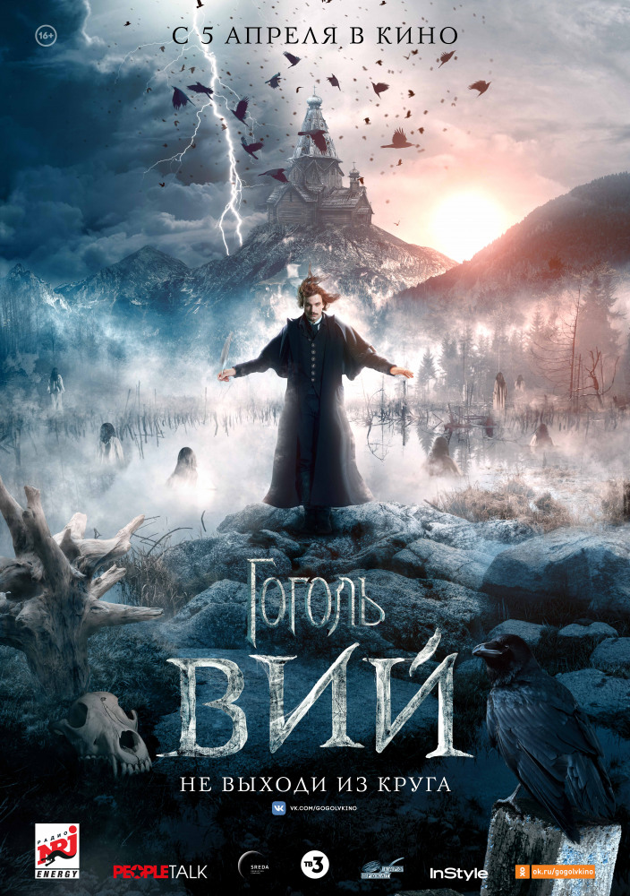
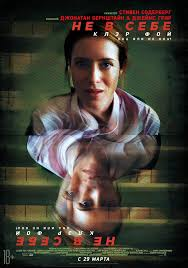

Гоголь. Вий
Писарь из Санкт-Петербурга Николай Гоголь бросает вызов загадочному тёмному Всаднику, который жестоко расправляется с девушками в окрестностях села Диканька. Собрав команду из местного полицейского, пьяницы-доктора, суеверного кузнеца и странствующего философа-экзорциста, Гоголь пытается заманить злодея в ловушку, но на его пути встает самое жуткое порождение нечистой силы – Вий, один взгляд которого способен высосать душу смертного. Неожиданно для себя Гоголь выясняет, что с потусторонними силами его связывают не только таинственные видения.
Тихоокеанский рубеж 2
Команда пилотируемых роботов-защитников остановила вторжение гигантских инопланетных монстров. Великая битва за Тихоокеанский рубеж ознаменовала новую главу в истории человечества. Однако война только начинается…
Tomb Raider: Лара Крофт
Лара Крофт — весьма самостоятельная дочь эксцентричного искателя приключений, который пропал, едва она стала подростком. Теперь ей двадцать один, она бесцельно проживает свою жизнь, курьером рассекая на байке по забитым улицам восточного Лондона, а ее заработка едва хватает на оплату квартиры и занятий в колледже. Решительно настроенная пробиться сама, она отказывается брать на себя руководство глобальной империей отца, столь же категорично отвергая мысль о том, что он действительно пропал. Слыша советы о том, что ей нужно смириться с этим фактом и жить дальше после семи лет бесплодных поисков, Лара уже и сама не понимает, что же заставляет ее распутывать обстоятельства его таинственной смерти.
Леди Бёрд
Кристина МакФерсон учится в консервативной католической школе в Сакраменто. Она ищет себя, своё место в мире и пытается быть не похожей на других. Её волосы выкрашены в странный красно-розовый цвет, а имя Леди Бёрд она дала себе сама и именно так просит её называть. И главная её мечта — вырваться из этого провинциального захолустья и поехать учиться в Нью-Йорк.

Не в себе
Главная героиня не по своей воле попадает в психиатрическую клинику. Ей приходится столкнуться лицом к лицу со своими страхами, не зная настоящие они или вызваны психотропными средствами, которые ей вводят.
 Корзина
Корзина